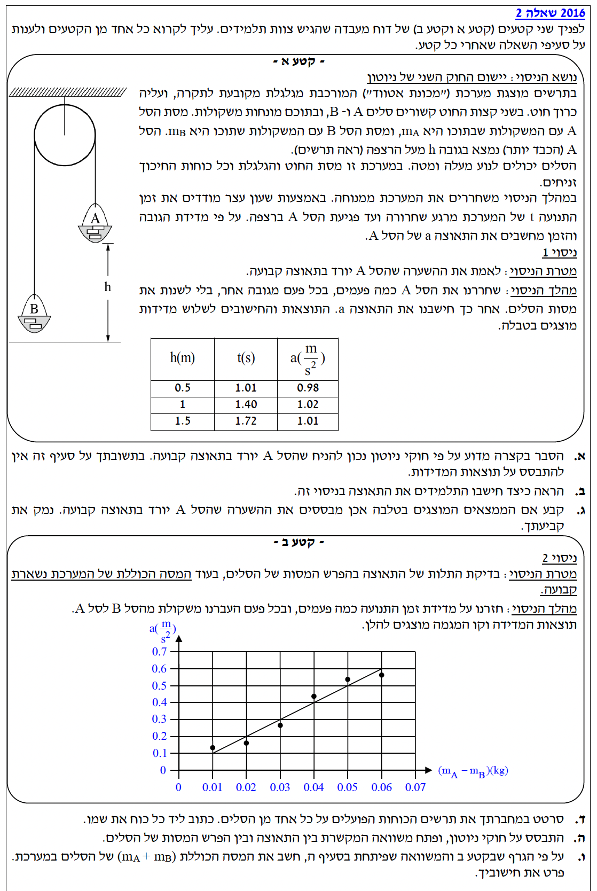
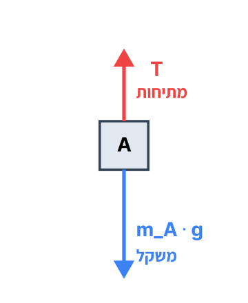
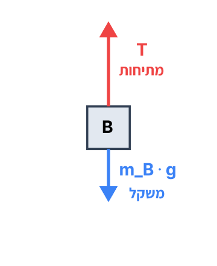

פתרון מלא ומפורט עם הסברים פדגוגיים לכל סעיף

מערכת הכוללת שני סלים הקשורים בחוט אידאלי העובר מעל גלגלת אידאלית (חסרת מסה וחיכוך). ידוע כי מסת סל A גדולה ממסת סל B, כלומר \( m_A > m_B \). המערכת משוחררת ממנוחה ולכן המהירות ההתחלתית היא \( v_0 = 0 \text{ m/s} \).
הסבר פיזיקלי ומתמטי מדוע נכון להניח שסל A יורד בתאוצה קבועה לאורך מסלולו.
כדי להוכיח שהתאוצה קבועה, נשרטט תחילה את הכוחות הפועלים על כל אחד מהסלים (תרשימי גוף חופשי) ונפתח משוואה המבטאת את התאוצה של המערכת.


כעת, נרשום את החוק השני של ניוטון עבור כל גוף בנפרד. נגדיר את כיוון התנועה כחיובי (למטה עבור A, למעלה עבור B):
נחבר את שתי המשוואות כדי לבטל את כוח המתיחות הפנימי \( T \):
נוציא גורמים משותפים ונבודד את התאוצה \( a \):
מהביטוי הסופי שקיבלנו לתאוצה \( a \), ניתן לראות כי היא תלויה אך ורק במסות הסלים (\( m_A \), \( m_B \)) ובתאוצת הכובד (\( g \)). מכיוון שמסות הסלים אינן משתנות במהלך התנועה ותאוצת הכובד היא קבוע, כל הפרמטרים במשוואה קבועים ולכן תאוצת המערכת קבועה לאורך כל המסלול.
בניסוי נמדדו גובה הנפילה וזמן הנפילה. עבור השורה הראשונה בטבלה נתון הגובה \( h = 50 \text{ cm} \) והזמן \( t = 1.01 \text{ s} \). בנוסף נתון כי המערכת משוחררת ממנוחה ולכן \( v_0 = 0 \text{ m/s} \).
שלב 0 - המרת יחידות (MKS): נמיר את הגובה מסנטימטרים למטרים על ידי חלוקה ב-100: \( \Delta x = h = \frac{50}{100} = 0.5 \text{ m} \).
להראות את תהליך החישוב שבעזרתו מצאו את ערך התאוצה \( a \) הרשום בטבלה עבור השורה הראשונה.
נקבע את נקודת השחרור כראשית הצירים, כלומר \( x_0 = 0 \text{ m} \). נבחר כיוון חיובי כלפי מטה (כיוון תנועתו של סל A). נציב את הנתונים \( x - x_0 = \Delta x = 0.5 \text{ m} \) ואת המהירות ההתחלתית \( v_0 = 0 \text{ m/s} \) לתוך משוואת המיקום-זמן מתוך דף הנוסחאות:
נכפיל ב-2 ונחלק ב-1.0201 כדי לבודד את הנעלם \( a \):
ערכי התאוצה שחושבו בטבלת הניסוי עבור ניסיונות שונים באותם תנאים הם: \( 0.98 \text{ m/s}^2 \), \( 1.02 \text{ m/s}^2 \) ו- \( 1.01 \text{ m/s}^2 \).
לקבוע האם תוצאות המדידות והחישובים מבססות את ההשערה (שקבענו בסעיף א') שהתאוצה קבועה.
בסעיף זה אין צורך בנוסחה פיזיקלית חדשה, אלא בניתוח לוגי של שגיאות מדידה ביחס לממוצע.
כאשר אנו בוחנים את ערכי התאוצה המחושבים, אנו רואים שהם קרובים מאוד זה לזה ומפוזרים סביב ערך ממוצע של כ- \( 1.00 \text{ m/s}^2 \). בפיזיקה ניסויית תמיד קיימות שגיאות מדידה (כגון זמן תגובה בהפעלת השעון או אי דיוק קל במדידת הגובה). ההבדלים המזעריים בין הערכים (אחוזים בודדים) אינם מעידים על שינוי ממשי בתאוצה, אלא הם ביטוי לאותן שגיאות אקראיות טבעיות.
שני הגופים, סל A וסל B, נמצאים בתנועה (A יורד ו-B עולה). החוט המחבר ביניהם מתוח.
לשרטט תרשים כוחות (Free Body Diagram) נפרד, ברור ומדויק עבור כל אחד מהסלים.
שלב זה הוא ויזואלי ולא דורש הצבה בנוסחה, אך מבוסס על הבנת הכוחות: משקל \( W = m \cdot g \) ומתיחות \( T \).
הכוח כלפי מטה גדול מהמתיחות, לכן התאוצה כלפי מטה.
המתיחות גדולה מהכוח כלפי מטה, לכן התאוצה כלפי מעלה.
תרשימי הכוחות ששורטטו בסעיף הקודם. אנו יודעים ששני הגופים נעים באותו גודל תאוצה \( a \) עקב הקשר ביניהם באמצעות החוט.
לפתח ביטוי אלגברי המבטא את תאוצת המערכת \( a \) כפונקציה של המסות \( m_A \), \( m_B \) ותאוצת הכובד \( g \).
נרשום את חוקי ניוטון עבור כל גוף בנפרד. נבחר לכל גוף ציר תנועה נפרד כך שכיוון התנועה שלו ייחשב כחיובי. עבור גוף A הציר החיובי יפנה מטה, ועבור גוף B הציר החיובי יפנה מעלה. בדרך זו התאוצה \( a \) היא חיובית בשתי המשוואות.
משוואה לגוף A: הכוח מטה פחות הכוח מעלה שווה למסה כפול התאוצה:
משוואה לגוף B: הכוח מעלה פחות הכוח מטה שווה למסה כפול התאוצה:
נחבר את שתי המשוואות יחד בחיבור אלגברי. כוח המתיחות הפנימי \( T \), המופיע בסימן הפוך בשתי המשוואות, יתבטל לחלוטין:
נוציא גורמים משותפים (\( g \) בצד שמאל, \( a \) בצד ימין):
נחלק במסה הכוללת \( (m_A + m_B) \) כדי לבודד את התאוצה:
נתון גרף של התאוצה \( a \) כפונקציה של הפרש המסות \( (m_A - m_B) \). ידוע כי במהלך כל המדידות דאגו לשמור על מסה כוללת קבועה \( m_A + m_B = \text{const} \). קראנו מהגרף שתי נקודות מדויקות על קו המגמה. למשל, נניח שהפרש המסות הומר מגרמים לקילוגרמים (שלב 0 - MKS: \( 50 \text{ g} = 0.05 \text{ kg} \)). הנקודות הן: נקודה ראשונה \( (0.01 \text{ kg}, 0.1 \text{ m/s}^2) \) ונקודה שנייה \( (0.06 \text{ kg}, 0.6 \text{ m/s}^2) \).
לחשב את המסה הכוללת של המערכת, כלומר את הערך של \( m_A + m_B \), מתוך שיפוע הגרף.
נסדר את המשוואה מסעיף ה' בצורה של פונקציה ליניארית, בה המשתנה התלוי \( y \) הוא התאוצה \( a \), והמשתנה הבלתי תלוי \( x \) הוא הפרש המסות \( (m_A - m_B) \):
הביטוי שבתוך הסוגריים מייצג את הקבוע, שהוא למעשה שיפוע הגרף (slope). לכן התיאוריה חוזה ש:
כעת נחשב את השיפוע מהנתונים שנלקחו מתוך הגרף עצמו (הפרש ערכי Y לחלק להפרש ערכי X):
נשווה בין השיפוע העיוני לשיפוע הניסויי, ונציב \( g = 10 \text{ m/s}^2 \):
נכפול במכנה ונחלק ב-10: